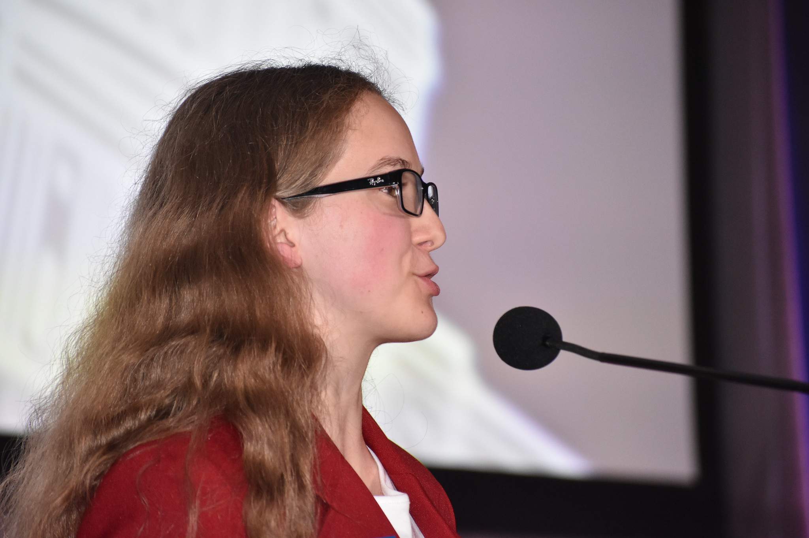

WLTI
Public Speaking
WLTI is a change for members of our organization to travel to our nations capital and engage in many empowering advocacy events and trainings that will help them go on to then advocate to their legislature members later in the week. As a national officer, we ran the conference with staff, speaking at each session to offer advice and insight into the week.
As a team we were divided into different sections of the SkillsUSA POWERR formula to create speeches for the opening ceremony. I was apart of the wisdom team and we worked together to find some advice that we could give to the members that would help them better prepare for the week ahead. We brainstormed some ideas and ultimately decided to focus on the idea of how important the member experience and your personal stories can be to your message of advocacy as it was something that we all had to learn was very important ourselves.
Once we had determined our goal I had to write my personal experience with this idea, I worked to write down my experience and find a way to capture the importance of what I had learned in a short amount of time and without taking too much out of the other parts of wisom. Wisdom is broken into three parts, the evidence, main point, and action. When I had written speeches before I was writing using the entirety of the POWERR formula which mean I could create a build up, main point, and resolution myself but this time I was working with my team to make sure mine meshed with theirs. We worked on our scripts back and forth and got feedback from our trainer before ultimately deciding on a final draft and began memorizing. My next challenge was memorizing to a point that I would feel comfortable enough to change my tone to better reflect the different parts of my message. Working with my trainer I would push my inflection to a more sad tone at the begining before jumping up in tone and getting excited to bring to the conclusion. This was probably one of the hardest but most fun speeches that I've written because I felt pushed to find something that worked with my team.
I believe this helped me learn how to better write in a style that works with others. I had to learn how to adapt and communicate my thoughts clearly with my team so that all of us would carry the same message thoughout our section. It was a fun experience and I grew a lot from working on my tone, inflection and memorization of my scripts.
Essential Elements Learned
- Teamwork
- Communication
Additional Resources
